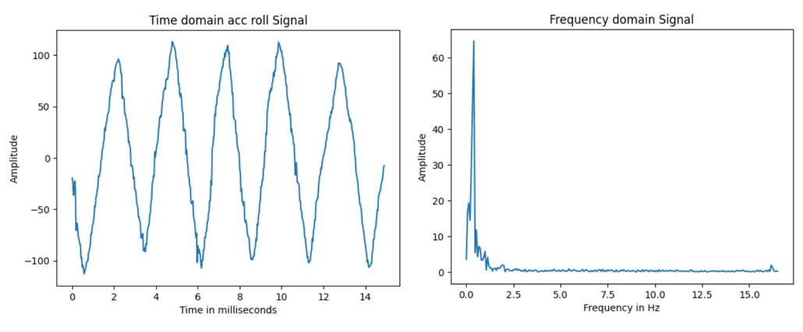
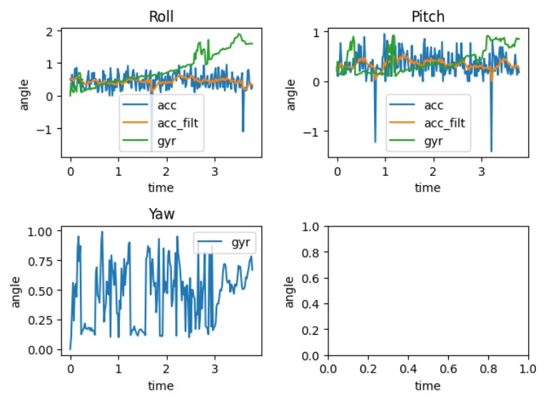
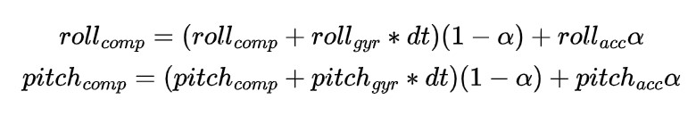

Objective
The aim of this lab is to connect the Inertial Measurement Unit (IMU) to the Artemis board, and to characterize the capabilities of the sensor.
Lab Tasks
IMU Setup
The IMU sensor was connected to the Artemis board via the I2C communication protocol as shown in the figure below.
The orientation of the sensor's coordinate system is indicated on the diagram.
The example code (SparkFun Example1_Basics)
was executed to verify the normal operation of the sensor. Note that in the example code, AD0_VAL is defined to be 1 as default,
which sets the last bit of the I2C address of this device to 1. However, in our case, as the ADR jumper is not closed,
the value of AD0_VAL was adjusted to 0 to ensure correct recognition of the sensor.
To visually confirm the IMU's functionality, slight modifications were made to the example code's serial output format
to enable compatibility with the Better Serial Plotter, and the plots are demonstrated in the video below. The upper plot displays
the accelerometer readings in XYZ directions, while the lower plot shows the gyroscope readings.
When slowly rotating the IMU on a plane perpendicular to the Z-axis, noticeable fluctuations are observed in the accelerometer readings along the X and Y axes,
whereas gyroscope readings remain relatively stable; when rotating rapidly, the accelerometer readings show larger fluctuations,
reflecting significant angular changes, as the accelerometer values reflect the decomposition of gravitational acceleration 'g' within
the sensor's own coordinate system. The gyroscope readings also show noticeable variations, which is due to their measurement of the angular velocity
while rotating.
Accelerometer
To obtain the robot's angle information, the raw accelerometer data generated by the IMU should be processed using the following
formula, where the directions of the angles are shown in the figure below.
Note that in this lab, it is assumed the IMU is mounted flat on the robot, so the sensor's z-axis is always
parallel to the direction of gravitational acceleration. Therefore, it is not feasible to calculate the yaw value from accelerometer readings.
The accuracy of the accelerometer seems quite good. The table below compares the angles calculated from the accelerometer readings with the actual values of 90, 0, and -90
degrees for roll and pitch, respectively.
The downside with the accelerometer is its high noise level, and Fourier transform can be used to study this problem. By
manually rotating the IMU around the x-axis periodically, the sampled data below shows some higher-frequency noise apart from
the main peak of the low-frequency in the frequency domain, which is also correspondingly observable in the time-domain
signal as the waveform is a little shaky.

In fact, the noise situation is better than expected. After checking the datasheet, it was discovered that the ICM20948
itself has a built-in accelerometer low-pass filter, so the signal may have already been processed. To further reduce
noise, adding another low-pass filter with a lower cutoff frequency could be considered. For this testing case, a cutoff
frequency of 1Hz was chosen after observing the signal spectrum, and the filtered effect is shown in the figure below.
As future labs may involve higher-frequency signals when the robot performs stunts, the cutoff frequency should be adjusted accordingly to be higher.
Gyroscope
Since the gyroscope measures the rate of angular change in degrees per second, the current angle can be calculated using
the following formula.
The gyroscope measures the rate of angular change (in degrees per second), requiring an initial angle before
calculating angle changes based on this initial value. Here, the accelerometer's angle was chosen for determining the
gyroscope's initial value, which means that if the robot starts on a inclined surface, the gyroscope accumulates angle changes
from the current angle generated by the accelerometer instead of starting from 0. However, the initial value
for yaw is still set to 0 because the accelerometer is not a reliable source of yaw information, as mentioned earlier.
The figure below shows a comparison between the output of the gyroscope, accelerometer, and the filtered accelerometer
values for pitch, roll, and yaw when the IMU was put on the lid of a box, which was then repeatedly tapped.

The filtered accelerometer values are noticeably smoother compared to the unfiltered values, and the gyro noise is
generally less compared to the unfiltered accelerometer readings. The problem with gyro readings is that the measured angular velocity
at each moment might be a small nonzero value due to tiny noises. This accumulates over time, causing gyro angles to drift, which can be observed in the graph.
Delays were introduced into the loop that captures the sensor readings, for inverstigating the impact of sampling frequency on accuracy.
The resulting figure is demonstrated below. Upon further comparison of the two graphs, the first graph, with a sample rate of 52Hz,
appears to be more accurate than the second graph, which introduced a delay and resulted in a sample rate of 16Hz.
However, gyro drifts over time in both cases.
According to the above tests, the accelerometer provides relatively accurate measurements but is more sensitive to noise
and cannot be used for yaw on the lab kit. The gyro, on the other hand, is more resistant to noise but has the fatal
drawback of accumulating drift over time, resulting in increasingly inaccurate angles. To combine the advantages of both
and produce both accurate and stable values, a complementary filter was applied, which is represented by the following
formula:

The alpha value in the complementary filter determines the reliance on the gyro versus the accelerometer. The cases of
alpha=0.3 and 0.8 were tested, as shown in the graph below:
It can be seen that both choices of alpha value help reduce the effects of gyro drift, with alpha=0.3 showing greater
resistance to noise. Using this alpha value, the performance of the complementary filter in terms of accuracy and range
is demonstrated in the video below:
The top plot in the video shows the roll and pitch values after complementary filtering, while the bottom two plots show values from
accelerometer and gyro, respectively. It can be observed that the complementary filter provides a real-time, stable, and
accurate response to the sensor's angles.
Sample Data
The fastest sampling rate depends on the capabilities of the IMU and the processing speed of the Artemis. To test this,
three new commands were added: START_RECORD, STOP_RECORD, and GET_ANGLES_RECORDED. The code for grabbing data from the
IMU was placed in the main loop and all prints were removed for reducing delays.
When the user sends START_RECORD, a flag will be raised, and the main loop starts storing angle data and corresponding
timestamps in seperate arrays. This continues until the arrays are filled or the user sends STOP_RECORD. Note that in every iteration of the
main loop, instead of waiting for IMU data to be ready, it just moves on to the next iteration if no data is currently available.
The pseudo code is as follows:
In the Python code, a notification handler was set up to receive data from the Artemis and split it into arrays, as shown
in the code snippet and results below. Data was collected continuously for 5 seconds and transmitted via Bluetooth.
In this setup, the sampling rate can reach over 250Hz. To explore which is faster between the main loop on the Artemis
and the IMU in producing new values, a variable called "missed_counter" was introduced. Each time the main loop checks
for new IMU data and finds none, the missed_counter will be incremented by 1 to reflect that the IMU missed an opportunity to send
data to the main loop. After executing the command, the value of missed_counter remained 0,
indicating that the IMU produces new data faster than the main loop runs.
Stunt
The following video showcases stunts performed by the RC car used as the lab kit. Understanding the capabilities and
performance of the car can help establish a baseline expectation for future lab activities.
The video demonstrates the RC car's impressive acceleration and rotational speed. After colliding with a wall,
the RC car is also capable of flipping over and resuming operation. These features may indicate a need for high
noise resistance in the IMU angle measurements. Additionally, it is important to be cautious with the PID control for
distance, as miscalculations could lead to the RC car crashing into a wall at high speeds and damaging the
attached Artemis and sensors.
Discussion & Conclusion
In this experiment, I reviewed the functionality of the IMU, analyzed the strengths and weaknesses of accelerometer and gyroscope measurements, and successfully applied a complementary filter to obtain reliable readings. For this lab and the upcoming one, careful consideration is needed in assembling hardware on the robot. Designing without a definitive answer requires more research and experimentation - I am starting to gain a hang of building a small project from scratch.
References
Lab tutorials
SparkFun_ICM-20948_ArduinoLibrary
ICM-20948 Datasheet
Apollo3 Datasheet
Fourier Transform In Python